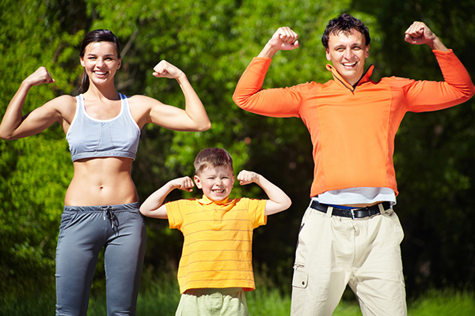

Технический прогресс не стоит на месте, в нашу жизнь прочно входят самые различные гаджеты, которые существенно облегчают жизнь, и, как следствие, физическая активность людей существенно сокращается. Такую тенденцию явно можно проследить даже в последнее десятилетие. С одной стороны, человечеству можно поаплодировать, ведь мир развивается и прогресс не стоит на месте. Значение спорта для здоровья человека весьма существенно.
Однако есть и обратная сторона медали – такой пассивный образ жизни ведет к снижению функциональных способностей человека, слабеет скелет, мышцы и даже меняется работа внутренних органов. Недостаток активности в жизни приводит к тому, что нарушается функционирование всех систем органов и страдает организм человека в целом. Тут и начинают развиваться самые разные заболевания. Именно поэтому роль спорта в здоровье человека велика. Как минимум потому что физическая активность – это чуть ли не единственный доступный нам способ удовлетворить природную потребность в движении и нагрузках. Здоровье человека и виды спорта, неважно какие, – очень взаимосвязанные между собой понятия.
Полноценная жизнь человека зависит от здоровья. Ему необходимо уделять много времени, стараясь не пренебрегать рекомендациями опытных специалистов — медиков и учёных. В основном эти советы связаны именно с физической активностью, потому что спорт приносит человеку неоспоримую пользу. Во-первых, занятия физическим трудом укрепляют мышцы, улучшают костную ткань — жить становится легче в прямом смысле слова. Кроме того, человек приобретает выносливость не только физическую, но и психологическую, ведь спорт воспитывает характер и силу духа. Благодаря занятиям спортом больше становится здоровых сосудов, улучшается состояние сердечно-сосудистой системы, что устраняет головные боли, проявления метеозависимости, мигреней, которые часто встречаются у людей разных возрастов. Ещё одна положительная составляющая влияния спорта на здоровье выражается в том, что физическая активность — профилактика остеохондроза. Спортивные нагрузки предотвращают образование грыж, артроза и остеопороза. Во время занятий улучшается быстрота и ловкость движений, их координация, быстрота реакции. Замечено, что благодаря физической активности улучшается мозговая деятельность, в основном из-за новых движений и командных игр.
Регулярные физические нагрузки – это основа правильного образа жизни и залог отсутствия проблем со здоровьем в преклонном возрасте. Люди, которые не пренебрегают занятиями спортом, меньше болеют, поскольку их иммунитет более эффективно борется с вирусами и возбудителями различных заболеваний, редко страдают избыточным весом и лучше справляются со стрессами и житейскими проблемами. Во время занятий спортом в организме человека происходит выработка эндорфинов, что положительно влияет на сердечно-сосудистую и нервную системы. Общая выносливость повышается, снижается содержание холестерина в крови, также снижается риск заболеть бронхолегочными недугами – ведь легкие у тренированных людей сильнее и выносливее. Никакое лекарство не способно расширить кровеносные сосуды на длительное время и так сильно, как работа мышц. Именно при физической нагрузке, через кровь к нашим органам поступают все необходимые питательные вещества, в том числе и кислород, что способствует нормальной работе этого органа. Сколько в последнее время открыто заболеваний, связанных с гиподинамией, начиная от ожирения и заканчивая заболеваниями сердечно-сосудистой системы и опорно-двигательного аппарата. Наш современный образ жизни к этому особенно располагает. В основном дома и на работе мы большую часть времени проводим сидя или перед телевизором, или за компьютером.
Здоровье человека – очень хрупкая система, требующая постоянного контроля и поддержки. Но как правильно о нем заботиться? Поможет ли в этом только правильное питание и укрепление иммунитета? Как подобрать оптимальные физические нагрузки, и нужны ли они вообще? Подобные вопросы часто возникают у малоподвижных людей. Говоря о пользе физической активности, нужно отметить, что важна их интенсивность, частота, работа над мышцами и скелетом.
Больше о спорте смотрите на сайте.